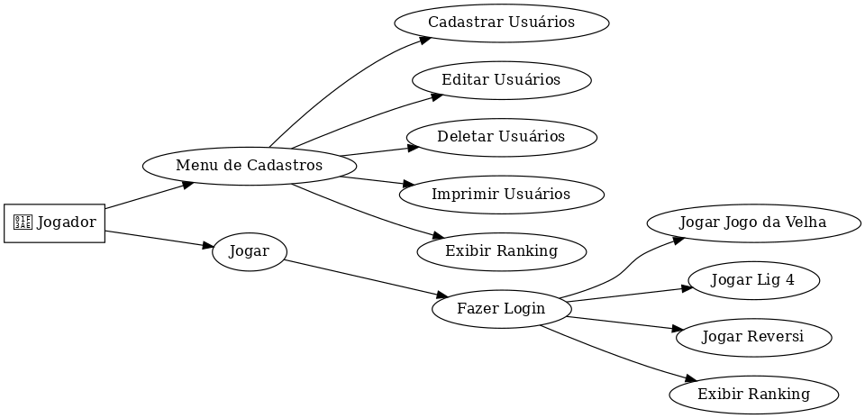

Projetos
-
Jogos de Tabuleiro /
Repositório
-
O objetivo deste trabalho foi desenvolver um sistema utilizando o paradigma de orientação a objetos para implementar alguns jogos de tabuleiro, especialmente o Reversi, o Lig 4 e o Jogo da Velha. Foi implementada uma hierarquia de classes que permite a criação de diferentes jogos, bem como um sistema de cadastro de jogadores que possibilita a manutenção de estatísticas. Além da modelagem e implementação, foram utilizadas ferramentas que permitem o controle de versão e desenvolvimento colaborativo, a realização de testes e a criação da documentação. O objetivo não foi apenas escrever um programa funcional, mas desenvolver um sistema confiável, reutilizável e de fácil manutenção e extensão. Por isso, foram aplicados todos os conceitos de Programação Orientada a Objetos, modularidade e corretude
